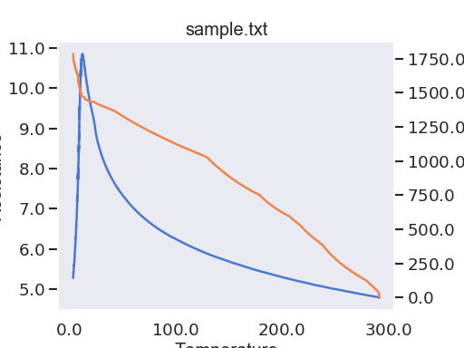

SeabornPlotStyle¶
-
class
Stoner.plot.formats.SeabornPlotStyle(**kargs)[source]¶ Bases:
Stoner.plot.formats.DefaultPlotStyleA plotdtyle that makes use of the seaborn plotting package to make visually attractive plots.
-
stylename¶ str – The seaborn plot stlye to use - darkgrid, whitegrid, dark, white, or ticks
-
context¶ str – The seaborn plot context for scaling elements - paper,notebook,talk, or poster
-
palette¶ str – A name of a predefined seaborn palette.
- Example
"""Example plot style using Seaborn plot styling template.""" from Stoner import Data,__home__ from Stoner.plot.formats import SeabornPlotStyle import os.path as path filename=path.realpath(path.join(__home__,"..","doc","samples","sample.txt")) d=Data(filename,setas="xyy",template=SeabornPlotStyle(stylename="dark",context="talk",palette="muted")) d.plot(multiple="y2")

Attributes Summary
contextProvide context getter. paletteProvide context getter. stylenameProvide getter for stylename. Methods Summary
apply()Override base method to apply seaborn style sheets. Attributes Documentation
-
context Provide context getter.
-
palette Provide context getter.
-
stylename Provide getter for stylename.
Methods Documentation
-

{kind=link}
{kind=link}